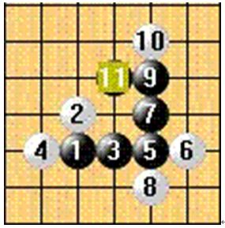

奇异视角下的五子棋（2）
#1 奇异视角下的五子棋（2） 作者：花落无痕 发表时间：2011-7-17 11:16:54
一位好友曾多次向我推荐《费曼物理学讲义》，一本影响无数人世界观、科学观的经典著作。可惜我英文太烂，看不了原本，尽管如此，书里的一些只言片语却还是常常在不经意间带来意外的收获，甚至是疯狂的想法。
大概在三年前，我知道五子棋的任一个落子都会产生 4 条直线 8 个方向的发散（任何一个落子都可以由 4 条直线穿过，具有 8 个方向，忽略盘端），但却找不到恰当的方式来认识它对五子棋的影响，直到我理解 “ 为什么我们是 3 维的人 ”……
我们知道五子棋棋子一子能产生 4 线 8 向的发散，根本原因是因为棋盘是 4 线 8 向的。如果能改变棋盘，就能改变棋子，观察棋子。
这里假定了直线棋盘，双线棋盘，正六边形棋盘结合正常棋盘观察

在直线棋盘上，棋子只有
1
/*760*90，创建于2012-2-9*/ var cpro_id = 'u761865';